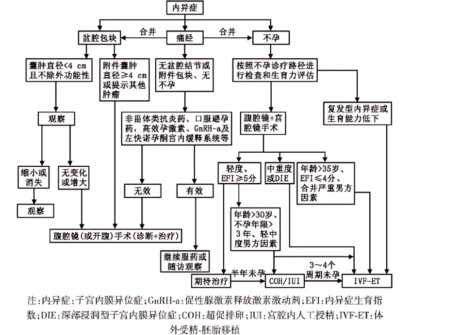

子宫内膜异位症¶
定义 4¶
子宫内膜异位症（内异症）是指子宫内膜组织（腺体和间质）在子宫腔被覆内膜及子宫以外的部位出现、生长、浸润，反复出血，继而引发疼痛、不孕及结节或包块等。内异症是生育年龄妇女的多发病、常见病。内异症病变广泛、形态多样、极具侵袭性和复发性，具有性激素依赖的特点。
WHO最新数据显示，子宫内膜异位症影响到全球大约10%（1.9亿）的育龄妇女和女童。[^5]综合文献报道，约10%的生育年龄妇女患有内异症，即全球约有1.76亿妇女为内异症患者；20%~50% 的不孕症妇女合并内异症,71%~87%的慢性盆腔疼痛妇女患有内异症。内异症是导致痛经、不孕症和慢性盆腔痛的主要原因之一，不仅对患者的生命质量产生负面影响，还对社会卫生资源造成重大负担 。
内在性子宫内膜异位症¶
子宫内膜组织在子宫肌层内生长，又称为子宫腺肌病。
外在性子宫内膜异位症¶
子宫内膜侵犯子宫肌层以外的组织，以卵巢最为多见，称为巧克力囊肿。此外子宫骶韧带、子宫下段后壁浆膜层以及子宫直肠陷凹、乙状结肠的盆腔腹膜、阴道直肠隔等处也较为常见。
病因¶
子宫内膜异位症的确切病因尚不清楚，但有几种理论被提出，其中经血逆流学说为如今的主流学说：
经血逆流种植学说¶
月经期脱落的子宫内膜碎屑随经血逆流，经输卵管进入腹腔，种植于卵巢表面或盆腔其他部位。
内异症形成“三步曲”:粘附、侵袭、血管形成,可将其称为“3A”程序。1
经量多于正常的育龄期妇女更容易发生经血内流。
体腔上皮化生学说¶
部分体腔上皮具有高度化生潜能，可以在内分泌化学物质的刺激下向子宫内膜上皮转化。2
淋巴及静脉播散学说¶
子宫内膜碎屑可以进入淋巴或静脉循环，播散种植至远隔器官，如肺、胸膜等。
临床表现¶
症状¶
疼痛¶
与月经周期有密切关系
主要表现为继发性与渐进性痛经。多于月经开始前1～2天出现，月经第1天最严重，以后逐渐减轻，可持续整个经期。疼痛部位多为下腹深部和腰骶部，有时可放射至会阴、肛门或大腿。3
其他部位疼痛
慢性盆腔痛、性交痛、排便痛和其他不同形式的疼痛。
月经异常¶
以经量增多或经期延长为主，可能与内膜增生或卵巢功能失调有关。
不孕¶
内异症所致不孕和流产的原因复杂、多样。包括盆腔炎症、粘连；不良卵泡、排卵障碍；输卵管的拾卵和受精卵的输送不良；胚胎质量低下、子宫内膜种植困难等。
体征¶
主要为结节和包块
绝大多数内异症都有结节或者包块，甚至可以出现在身体的任何部位。
-
扪及子宫粘连的肿块、破裂时有腹膜刺激症
-
双和诊时发现子宫后倾固定
-
直肠子宫陷凹/宫骶韧带/子宫后壁下方扪及触痛性结节
-
一侧/双侧附件处触及囊实性包块，活动度差
-
阴道后穹隆触及痛性小结节
诊断¶
病史询问¶
详细的病史询问，包括家族史、既往史和妇科史诊断的重要组成部分。
-
家族史 ：询问是否存在子宫内膜异位症的一级亲属，因为遗传因素可能增加患病风险
-
既往史 ：关注可能增加子宫内膜异位症风险的早期生活因素，如早产、低出生体重、既往腹部手术史等
-
妇科史 ：重点关注初潮年龄、月经出血模式（如经量过多）、不良妊娠结局以及既往盆腔手术史等
-
妊娠史 ：是否怀孕或不孕
症状评估¶
症状可能包括经期相关疼痛、非周期性疼痛、性交困难、排便疼痛、排尿困难和胃肠道症状等
-
症状出现的时间以及严重程度
-
症状的出现月经周期是否有关
-
是否出现痛经，并且有逐渐加重的趋势
-
医生会通过问诊，让患者描述自己疼痛严重程度：0代表无痛，1～3代表轻微疼痛逐渐加重，4代表刚对睡眠带来影响的疼痛，5～6代表渴望药物治疗的疼痛，7代表疼痛影响入睡，8～10代表逐渐不能忍受的剧痛。由此，可获得症状的视觉模拟评分（Visual Analogue Scale/Score，简称VAS），用于指导后续治疗方案的选择
-
是否有其他不适
体格检查¶
双合诊/三合诊¶
在检查时，医生会用手触摸盆腔的异常区域。妇科检查摸到与子宫相连的囊性包块或盆腔内有结节，触痛明显，有助于疾病的初步诊断。
影像学检查¶
B超¶
经阴道/肛门超声检查是诊断卵巢异位囊肿和直肠内异症的重要方法，可确定病灶的位置、大小和形状
核磁共振MRI¶
腹腔镜检查¶
可以直视病灶，通常不单独应用于诊断，往往同期做腹腔镜手术，去除疑似病变组织。
实验室检查¶
血清CA125测定¶
-
CA125水平升高更多见于重度内异症、盆腔有明显炎症反应、合并子宫内膜异位囊肿破裂或子宫腺肌病者。
-
CA125在其他疾病如卵巢癌中也可以升高，由于其敏感性并不是很强，一般不作为独立诊断的依据。
-
可用于监测病情变化、评估疗效和预测复发。
抗子宫内膜抗体¶
组织活检¶
治疗¶
根本目的 缩减和去除病灶，减轻和控制疼痛，治疗和促进生育，预防和减少复发
药物治疗¶
非甾体抗炎药¶
-
主要机制： 抑制前列腺素的合成，阻止致痛物质的形成和释放。但不能延缓内异症的进展。
-
用法：推荐与孕激素或COC联用；根据需要应用，间隔不少于6h。
-
副作用：胃肠道反应，肝肾功能异常。 长期应用要警惕胃溃疡的可能。
复方口服避孕药COC¶
-
主要机制：通过降低垂体促性腺激素水平，造成类似妊娠的人工闭经。
-
用法：连续或周期用药。
-
副作用：恶心、呕吐、40岁以上或有高危因素（如糖尿病、高血压、血栓史及吸烟）的患者，要警惕血栓的风险 。
孕激素¶
-
主要机制：抑制垂体促性腺激素分泌，使子宫内膜蜕膜化形成假孕。
-
副作用：恶心、轻度抑郁、水钠潴留、阴道不规则流血。
促性腺激素释放激素激动剂GnRH-a¶
-
主要机制：通过负反馈抑制垂体分泌促性腺激素，导致 卵巢激素水平下降，又称为药物性卵巢切除。
-
用法：依不同的制剂有皮下注射或肌内注 射，每28天1次，共用3~6个月或更长时间。
-
副作用：潮热、骨质丢失、阴道干燥、性欲减退。
其他¶
孕激素拮抗剂、雄激素衍生物、中药
其他治疗¶
-
激素型宫内节育器：如左炔错孕酮宫内节育系统（避孕环） ：目的是缓慢释放孕激素，使子宫内膜萎缩，可明显减少月经血量、缓解痛经。适合近期无生育要求的患者。
-
阴道环
-
皮下埋植
-
针剂
-
贴片
手术治疗¶
目的¶
切除病灶；恢复解剖；促进生育。
手术种类及选择原则¶
1.保留生育功能手术：
-
适合于年龄较轻或需要保留生育功能者
-
保留子宫和至少部分卵巢组织
-
术后复发率高，约为40%
2.保留卵巢功能手术：
-
切除病灶及子宫，保留至少部分卵巢组织
-
主要适合症状明显且无生育要求的45岁以下患者
-
复发率约为5%
3.根治性手术：
-
切除所有病灶
-
适合年龄较大、无生育要求、症状重或者复发经保守性手术或药物治疗无效者
-
几乎不复发
诊疗流程4¶

图1：子宫内膜异位症的诊疗过程图
就医建议¶
子宫内膜异位症对患者身体危害较大，因此如果出现以下情况，建议尽早到医院就诊：
-
痛经，且逐渐加重；
-
月经异常；
-
剧烈腹痛；
-
性交疼痛；
-
怀孕困难。
编写者： 颜妞 上传者： 张梓润
参考文献¶
-
BurneyRichard O., GiudiceLinda C.. Pathogenesis and Pathophysiology of Endometriosis. Fertility and Sterility, 98(3): 511--519, 2012. DOI: 10.1016/j.fertnstert.2012.06.029. ↩
-
郎景和.对子宫内膜异位症认识的历史、现状与发展[J]. 中国实用妇科与产科杂志,2020,36(03):193-196.DOI:10.19538/j.fk2020030101. ↩
-
中国医师协会妇产科医师分会,中华医学会妇产科学分会子宫内膜异位症协作组.子宫内膜异位症诊治指南（第三版）[J]. 中华妇产科杂志, 2021, 56(12): 812-824. DOI: 10.3760/cma. j. cn112141-20211018-00603. ↩↩